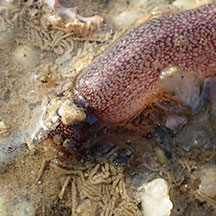
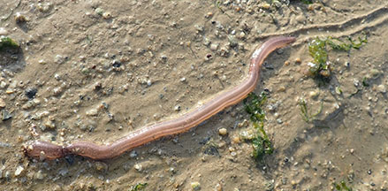
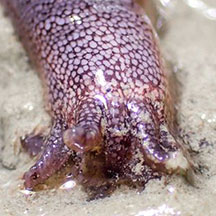
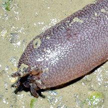

|
|
| sea cucumbers text index | photo index |
| Phylum Echinodermata > Class Holothuroidea > Order Apodida > Family Synaptidae |
| Mangrove
synaptid sea cucumber awaiting identification* Family Synaptidae updated Apr 2020 Where seen? This rather long sea cucumber is sometimes seen burrowing in or on mudflats or muddy areas near mangroves on our Northern shores. Features: About 20-30cm long, long thin body without bumps along the body. Feeding tentacles short and feathery. Colours uniform white, pink, purplish with stripes. Sometimes mistaken for worms. Here's more on how to tell apart worm-like animals. |
 Pasir Ris, Jan 20 |
 Pasir Ris, Jan 20 |
 |
*Species are difficult to positively identify without close examination.
On this website, they are grouped by external features for convenience of display
| Mangrove synaptid sea cucumbers on Singapore shores |
On wildsingapore
flickr
|
| Other sightings on Singapore shores |
 Marina East, Jul 20 |
 |